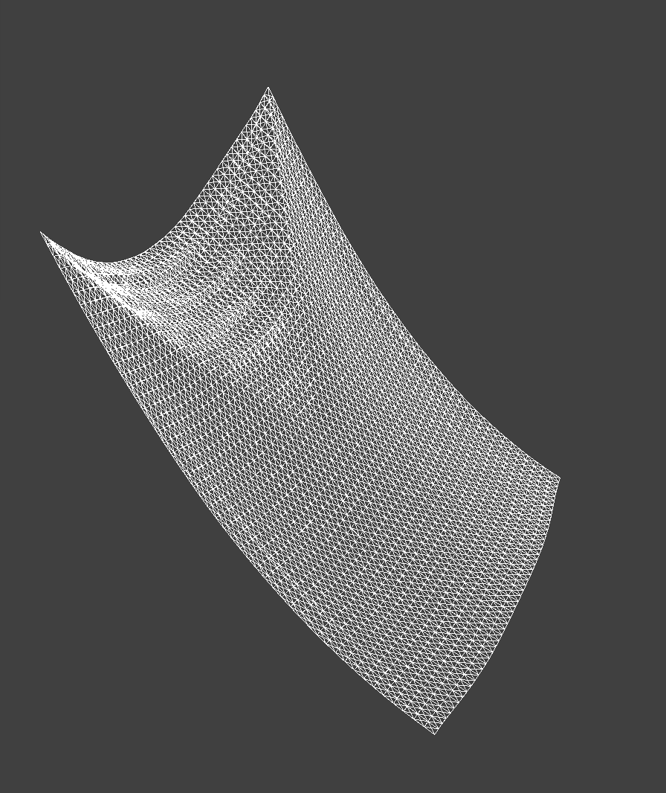
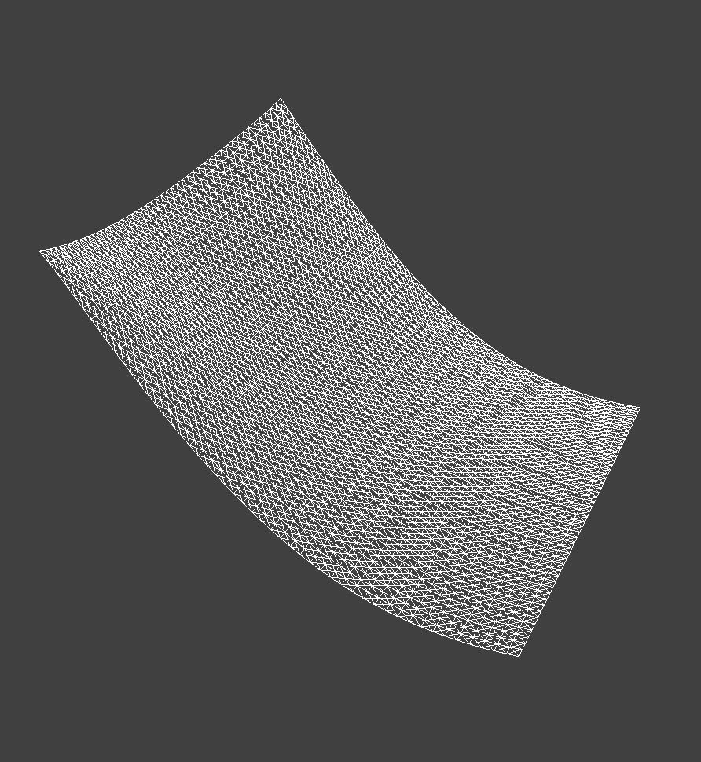
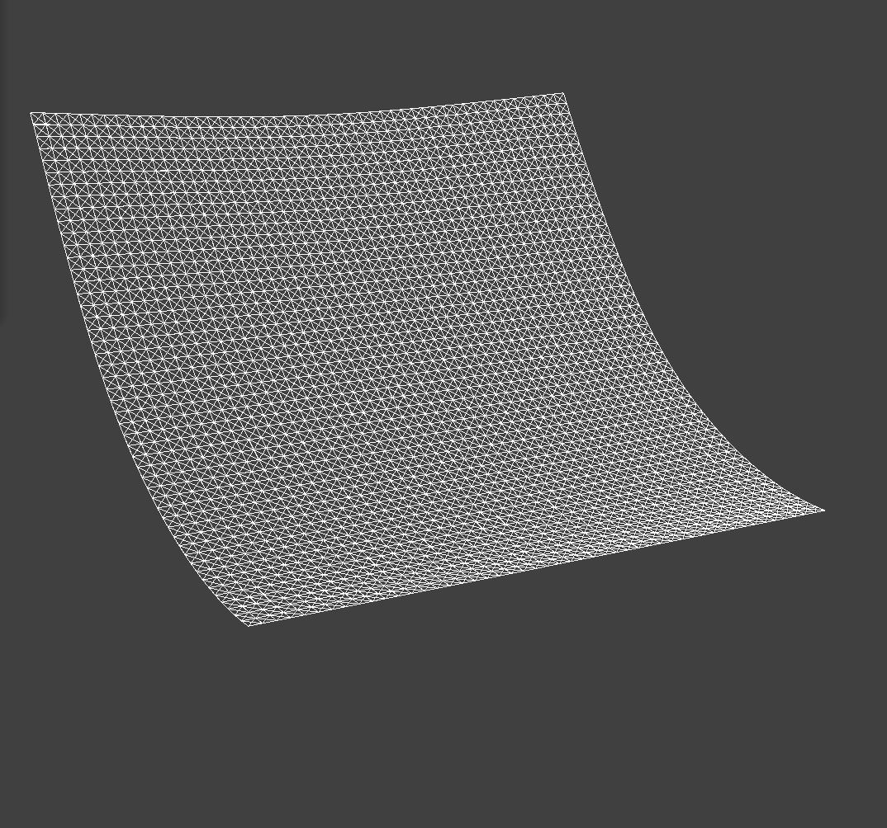
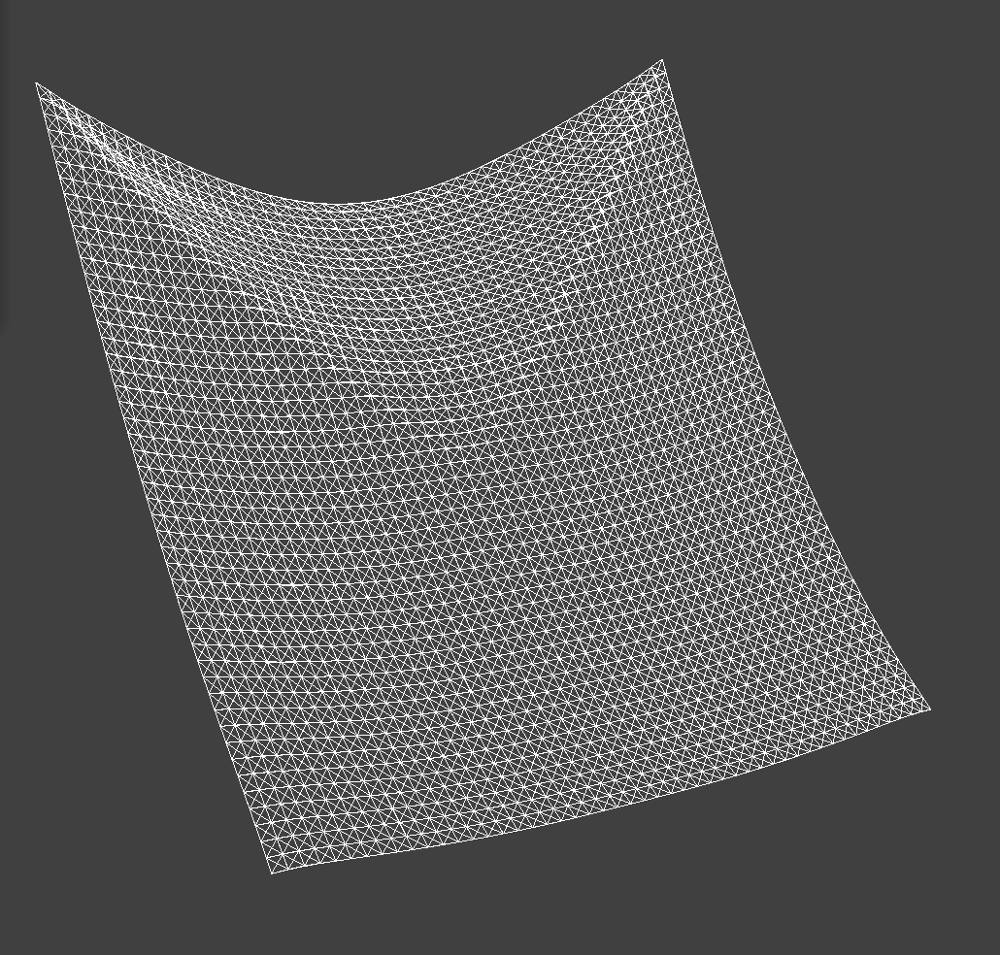
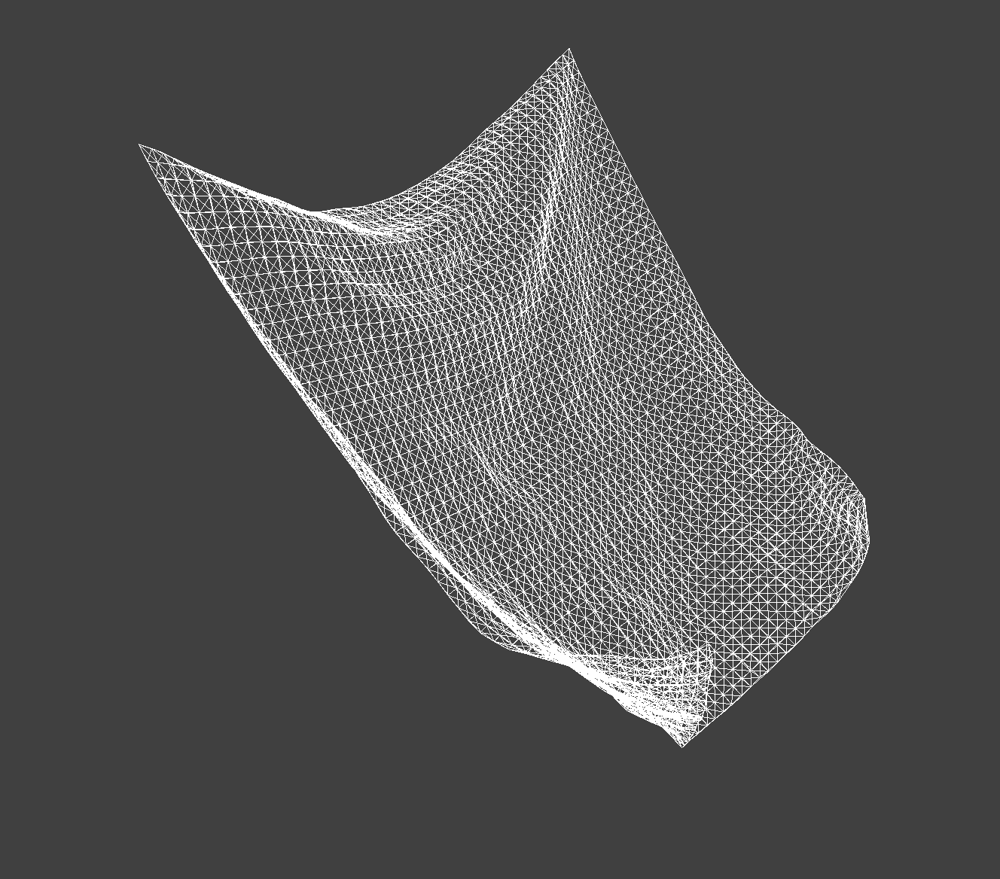
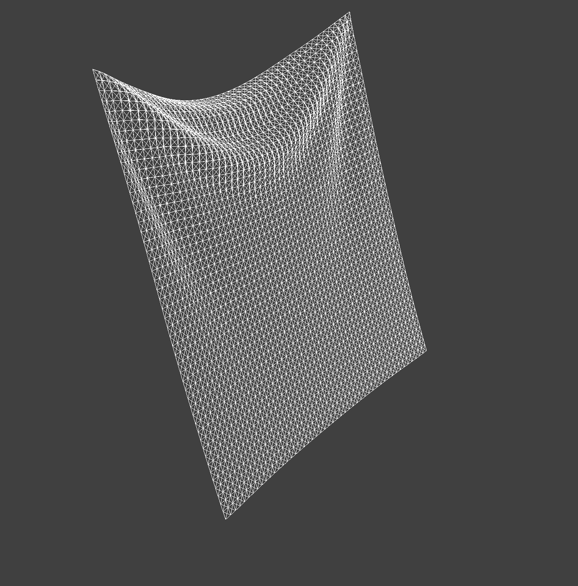

Describe the effects of changing the spring constant ks. How does the cloth behave from start to rest with a very low ks? A high ks?
A low spring constant, ks, means the springs have less resistance. This makes the cloth behave in a
looser and more flowy manner. When gravity acts on the cloth as it falls, it swishes around, sags more, and
takes longer to reach a still resting state.
A high spring constant means the springs have greater resistance, which makes the cloth stiffer and more resistant to stretching. It falls more rigidly, resists the forces of gravity more as it reaches the bottom, and overall has more structure.
As seen here, the cloth with a lower ks has more "bend" in the middle of its fall while the cloth with the higher hs is more rigid and exhibits less bending.


What about for density?
A lower density gives the cloth less mass and makes it lighter. This makes the cloth less resistant to motion, so it deforms and bends more easily when interacting with other forces or surfaces.
A higher density gives the cloth more mass and makes it heavier. This makes the cloth more resistant to changes in motion. The extra weight also causes the cloth to stretch and sag more as it reaches the bottom of the fall due to greater forces from gravity.
Here, it can be seen that the cloth with lower density appears "lighter" and does not deform under its own weight as much as the cloth with higher density, which sags more and appears "heavier".


What about for damping?
The damping factor determines how quickly the cloth loses energy over time. Low damping causes the cloth to retain more energy, so it bounces more after it falls before fully settling. High damping causes the cloth to lose energy more quickly and come to rest more quickly and smoothly.
In these renders, the cloth with low damping bounces around more and takes longer to come to rest, while the cloth with high damping comes to rest more quickly and smoothly.


pinned4 in final resting state